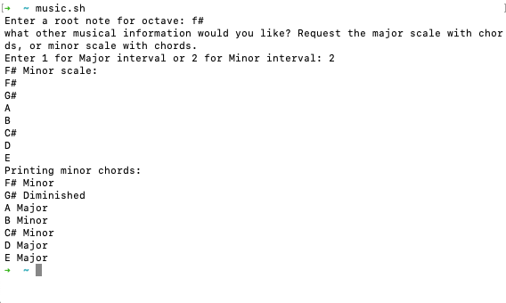

Creating music has never been more accessible. Anyone who owns a computer has access to an infinite number of sounds and tools that can be used to make music. Every Mac comes with a free digital audio workstation (DAW), equipped with digital synthesizers and virtual instruments, so throwing down a four on the floor and writing music is possible for anyone who has the interest in it. But for those with limited musical knowledge it’s hard to jump into making music that sounds good. How to know where to begin?

"Music is the pleasure the human mind experiences from counting without being aware that it is counting." - Gottfried Willhelm Leibniz
Music is Mathematical
Music is mathematical – it is the mathematical relationships between individual sounds that transform them into music. Differences in time, frequency, and amplitude contribute to a piece of music, just to name a few metrics. Four kick drum hits each played half a second apart is the beginning of a groove, whereas four of them at random intervals probably isn’t. Two separate chords with harmonious frequencies will sound nice, whereas too much dissonance and they will not feel musical. Whether or not sound is music, or even if a sound is musical, ultimately rests on mathematical relationships between individual sounds.
It is with this mindset that I decided to write my first program to assist in making these decisions. One of the first decisions to be made is what key to play in? In mathematical terms, this question asks which frequencies will be present in the piece of music. Do we want a major or a minor key? Which note do we want to be the “home” of the song? Once we’ve made this decision, how do we know which other notes and chords will be harmonious and compatible?
My simple program asks these basic questions, and returns answers to them.
The answers to these questions are all instances of the same patterns. Major keys always follow the same pattern, as do minor keys. In other words, a musical key’s structure is constant, but its content changes. For example, if I know which notes and chords are in the C major scale, I should also be able to figure out all other major scales. My small program does just that. I can feed it a root note, and ask for either the major or minor scale, and the program returns all of the key’s notes and chords.
Using an array of 12 elements each representing a different note, the algorithm selects the notes and chords that exist within the key.